Waikiki Aquarium Internship
An experience my 5-year-old self would be proud of.
Ever since I was a kid, I loved animals and visiting the Waikiki Aquarium. As someone who’d dreamt of working in the creative industry, I never imagined getting to work at the aquarium. Throughout the internship, I learned valuable skills that could help me in my career, such as communication with others for big scaled projects and managing multiple tasks on my own. One of the bigger projects I had was to design a Thanksgiving fundraiser. For that project, I had to create an illustration of three different sized narwhals that could be cut out. Then I created posters and tv displays for the campaign. The cut outs ranged in prices from one to five dollars and the fundraiser generated nearly one thousand dollars just after three to four weeks. Other projects at the aquarium involved creating signage for events and graphics for different types of media.
Service: Graphic Design
Software Xhibit Display System, Adobe Illustrator, Photoshop, Indesign.
Skills: Effective Communicating and Designing

.jpeg) 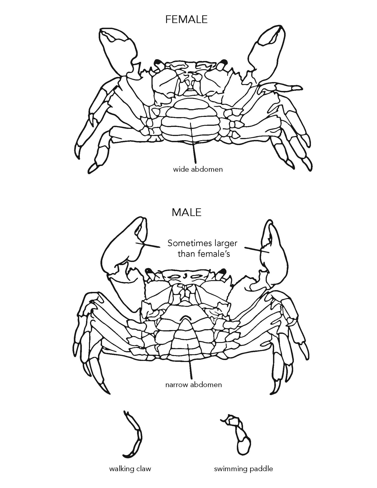
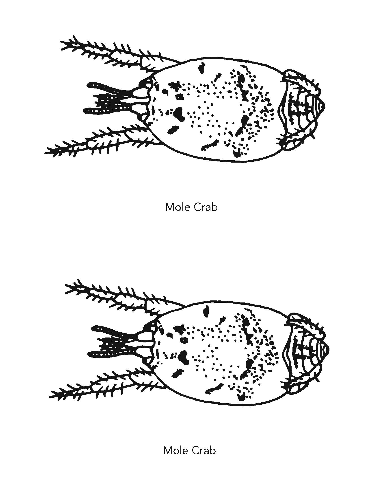
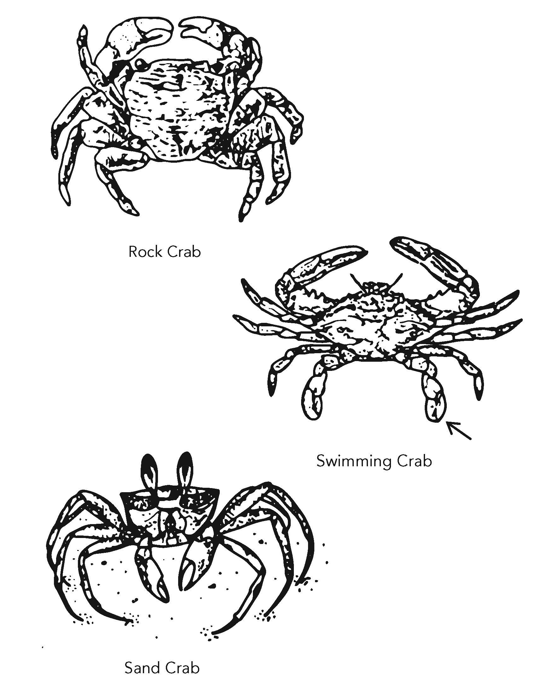
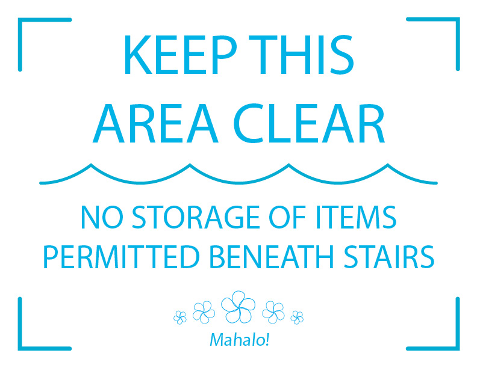
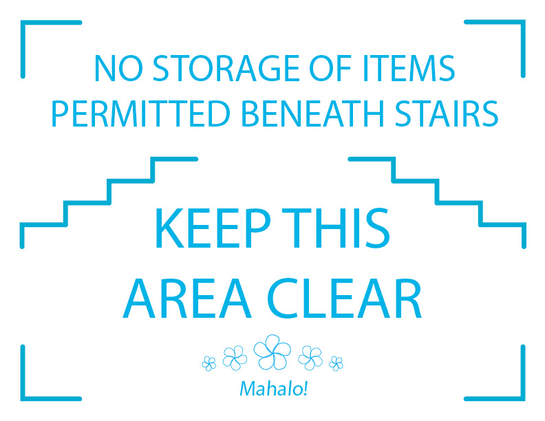
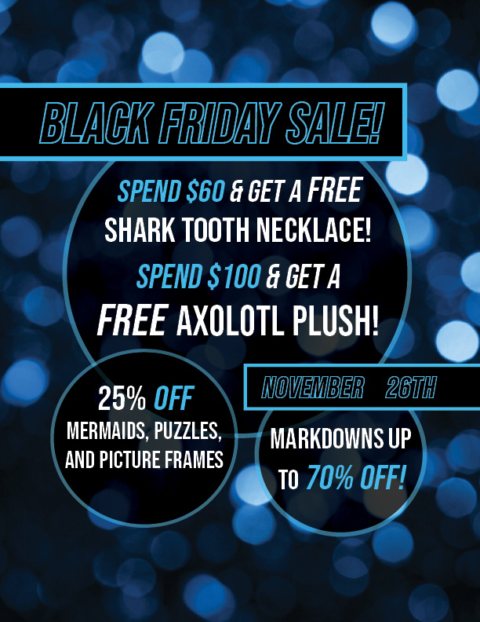
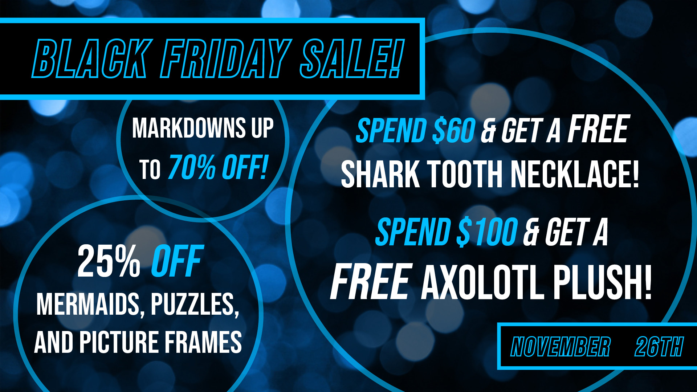
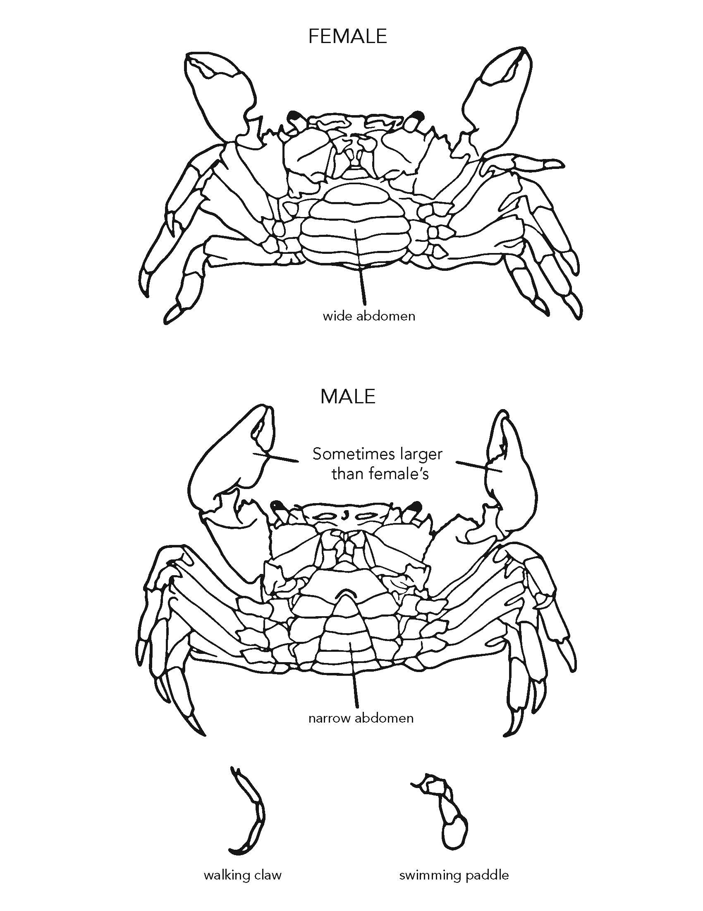
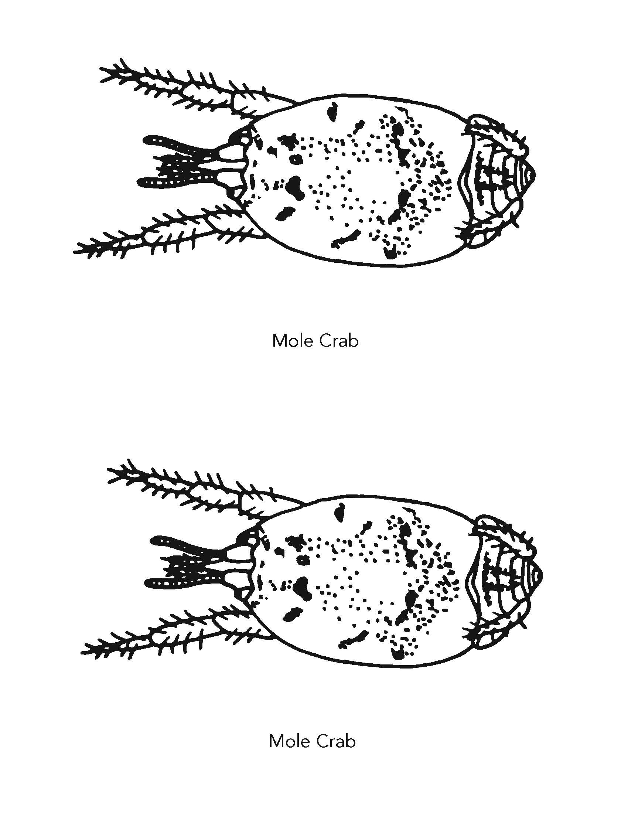
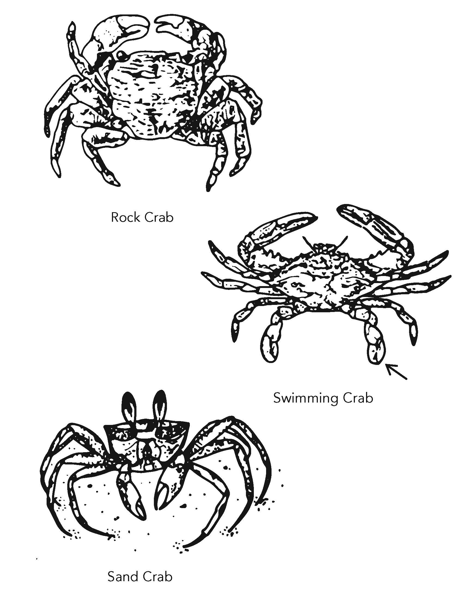
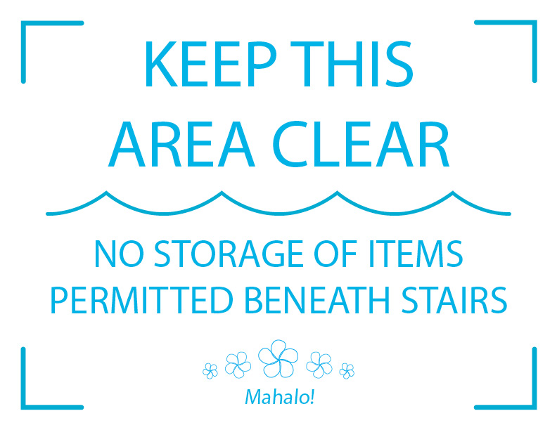
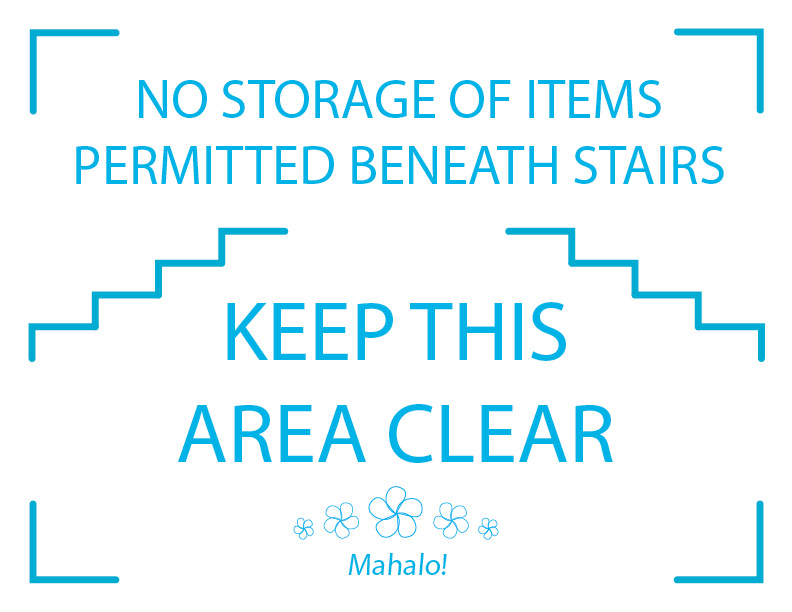
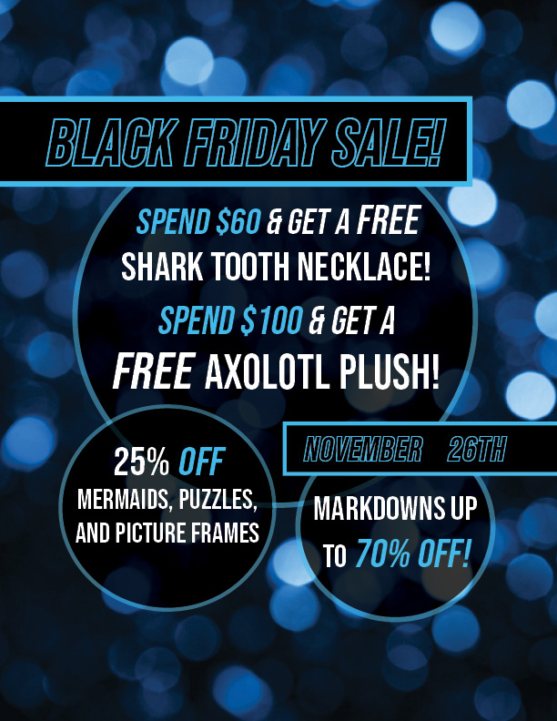
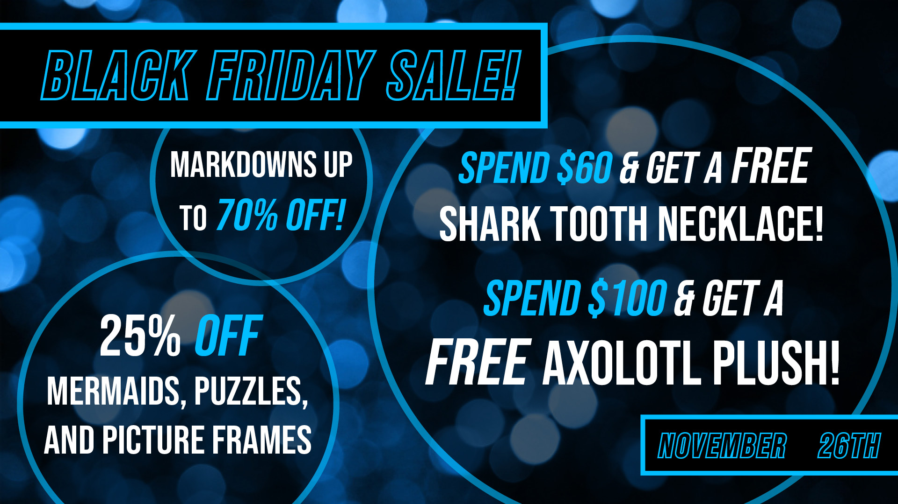